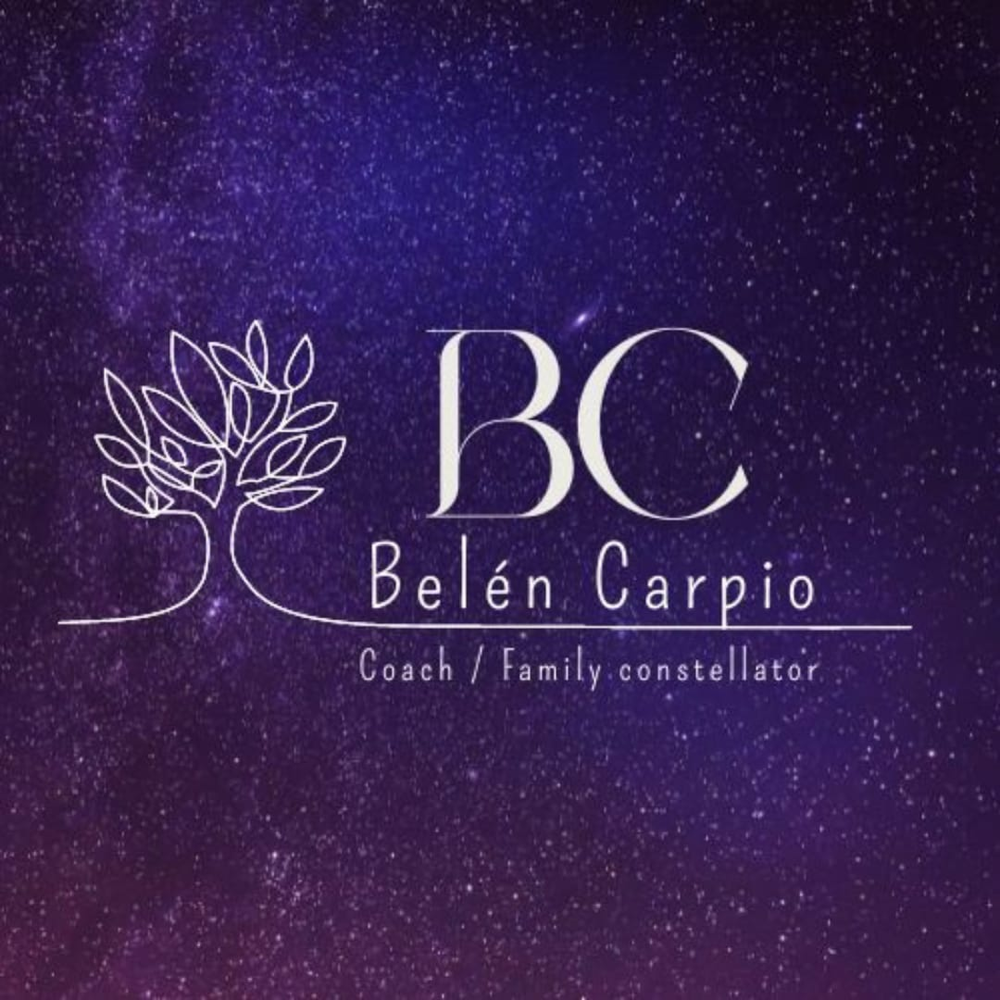
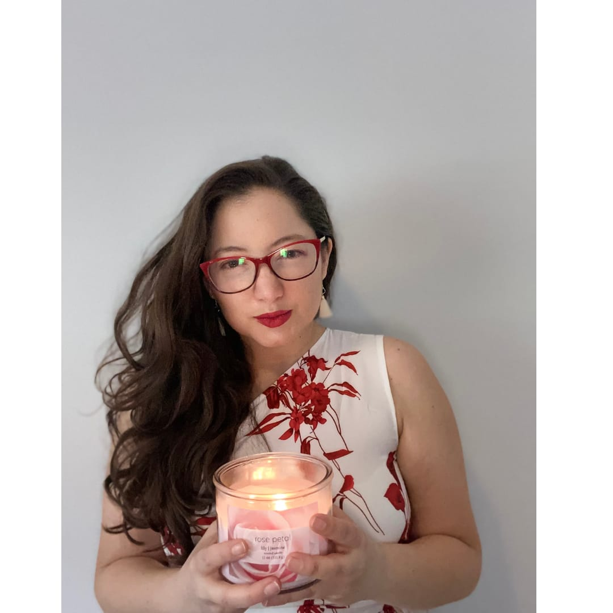
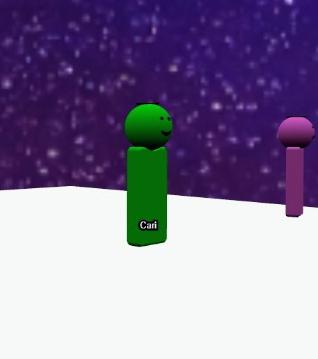
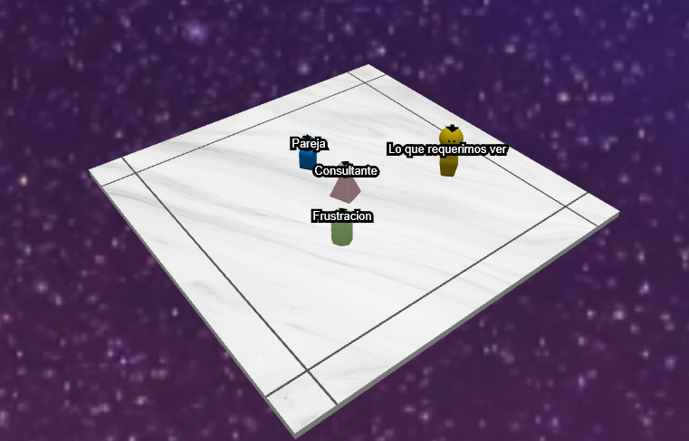
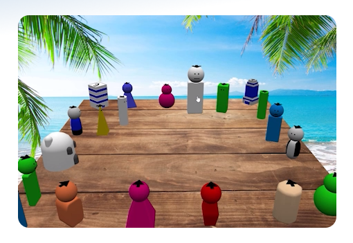

Why the word matters
Words shape trust. Family configurations makes room for the academic background of systemic therapy, phenomenology, and intergenerational trauma without flattening the emotional depth of the work.

Belén Carpio Family ConfigurationsBelén Carpio helps adults see how generational trauma, hidden loyalties, and inherited family roles can keep scripting love, money, belonging, and self-trust.
This is the evolution of family constellations into family configurations: a clearer, more academically grounded language for systemic work that respects the body, the family field, and the lived story of each client. Sessions can happen in person, over Zoom, or with Belén’s 3D experience app for interacting with ancestral patterns.
Belén is helping pioneer a more precise term for this work. “Configuration” keeps the systemic intelligence of the original method while sounding less mystical and more faithful to what happens: a family system is arranged, observed, and gently reorganized.
Words shape trust. Family configurations makes room for the academic background of systemic therapy, phenomenology, and intergenerational trauma without flattening the emotional depth of the work.
Repeated relationship loops, fear around success, exile from belonging, and generational trauma can appear as patterns in the system rather than personal defects.
When hidden loyalties are seen with dignity, the body often stops defending an old story. The goal is not blame. The goal is a more truthful configuration.

Family configurations use space, position, attention, and carefully guided perception to study the relational system. The work is experiential, but the background is serious: systemic family theory, embodied awareness, and the growing study of generational trauma.
We choose the issue, map the relevant people or forces, and place them in physical space using markers, objects, or representatives.
Patterns emerge through distance, orientation, sensation, emotion, and movement. The work listens before it explains.
What was excluded is given a place. What was confused is separated. What belongs to the past is allowed to stay in the past.
Each format gives the system a different kind of visibility. The right choice depends on how private the material feels, how much support you want around you, and whether an interactive 3D experience would help you see the pattern more clearly.
A focused space for sensitive family material, personal decisions, relationship patterns, grief, migration, money, or generational trauma.
A live online session for clients outside Cuenca or anyone who prefers to work from home while still being guided closely by Belén.
A collective field where participants witness and represent aspects of each other’s systems, often revealing shared human patterns with surprising clarity.
The Cecilios 3D tool, customized for Belén’s work, lets clients and facilitators interact with ancestral patterns as spatial configurations, making abstract loyalties and generational trauma easier to see.
Systemic work can also look at organizations, projects, leadership roles, money flow, and professional dynamics through the same spatial intelligence used in family systems.
Cecilios is an online 3D board for coaches, facilitators, and consultants. Customized for Belén's work, it lets people, symbols, tensions, and desired outcomes be placed in space so the session becomes easier to follow, more intuitive to guide, and more memorable for the person receiving it.



Private and couples sessions give sensitive material enough discretion and focus to be seen without rushing.


What if the pattern is not your personality, but a family configuration asking to be seen?
Generational trauma can travel as silence, loyalty, repetition, or a nervous system that learned the past before it could choose the present. This work does not promise magic. It offers a disciplined encounter with what has been carried.
Open the session prep sheetFor clients outside Cuenca, expats, and people who travel often, Zoom keeps the work private without losing the guided structure of the session.


These answers help you decide whether this work fits the pattern you are trying to understand.
Family Configurations are a systemic way to make inherited family patterns, hidden loyalties and generational trauma visible in space so you can relate to them with more clarity and choice.
Yes. Belén offers virtual sessions over Zoom for clients outside Cuenca, people who travel often, and anyone who prefers to work from home.
Yes. Sessions and discovery conversations are available in English and Spanish.
Clients often explore relationship loops, money or success blocks, grief, migration, belonging, family roles, ancestral patterns and generational trauma.
Belén’s 3D experience app supports spatial work by helping clients interact with ancestral patterns as configurations before, during or after sessions.
Family Configurations are a facilitated systemic process. If you are in clinical crisis or need medical or psychiatric care, this work should not replace licensed healthcare support.
The regional contribution is USD 100 for clients in the United States and USD 50 for Latin America. The premium integration pack is USD 300.
Choose one theme, arrive with enough time, and stay open to feeling rather than over-explaining. After the session, let the experience settle before analyzing or sharing it widely.
Yes. Business and organizational configurations can explore roles, teams, projects, money flow, leadership dynamics, and hidden tensions in a professional system.
"Hay una frase que dice: como te ven, te tratan. Y la realidad es que, como uno ve la vida, la vida lo trata a uno. Esta constelación me ayudó a ver la vida con amor, y es así como siento que la vida me trata ahora."
"Estuve mucho tiempo enojada, ansiosa, incómoda, y no encontraba el por qué. Ahora puedo entender y ver el origen desde otra perspectiva. Qué bueno es poder aceptar y honrar mi camino, bajar la guardia y sentirme tranquila."
"Esta es una herramienta muy poderosa para quienes quieren y están dispuestos a hacer algo diferente para disfrutar cada momento, para estar aquí y ahora, para conectar con todo lo bueno que merecemos."
"Fue una experiencia muy inolvidable y extraordinaria el sentir y ver cómo parte de mis problemas están conectados a través de mi linaje femenino y masculino, y cómo sus traumas, relaciones y emociones son transmitidos a mi vida."
"Pude aclarar muchas cosas que quería sanar y no podía. Un dolor de espalda que tuve muchos años desapareció después de ver que cargaba las emociones reprimidas de mi abuela materna. Después de la constelación pude aceptar, agradecer y devolver eso a ella — y el dolor no volvió."
"Lo recomiendo a quienes sienten que repiten patrones, que no entienden su dolor o su frustración, y buscan ver el origen desde otro lugar."
Group configurations, private referrals, and the 3D app can make roles, distance, belonging, and inherited loyalties easier to observe.


Belén’s preparation is intentionally simple. You do not need to over-explain the whole family story. Choose one theme per configuration and arrive open to observe, feel, and let the system show what matters.
Supporting a group configuration is offered through a contribution that honors the flow of giving and receiving. Witnessing and representing can be a grounded way to understand the method before choosing your own work.
Ask about supporting with a contributionStart with one focused session, or use the premium integration pack when the pattern is important enough to prepare, map, and integrate with more structure.
A clear entry point for one theme: relationship loops, money blocks, belonging, grief, migration, family roles, or generational trauma.
Regional contribution: USA USD 100 · Latin America USD 50.
USD 300
The premium anchor: a prepared private process with the session, the 3D ancestral-pattern app, and a focused integration kit so the insight has somewhere to land.
For patterns that involve more than one person, or when a group field can reveal belonging, exclusions, loyalties, and inherited roles more efficiently.
Financial reference point: a 15-20 session private-pay therapy arc at USD 100-200 per session can represent USD 1,500-4,000. That comparison is not a medical claim and does not make Family Configurations a substitute for therapy; it simply shows why a focused USD 300 systemic integration pack can be an efficient first step when the central question is a repeating family pattern.
Whether the work begins in a private session, a group circle, or the 3D ancestral-pattern app, the next step is simply choosing the pattern you want to understand.


Schedule your session directly, complete payment, or send a short WhatsApp message first if you want to ask whether your theme is appropriate for this work.
Direct contact: +1 (561) 601-8028 · belencarpio@gmail.com
Payment methods: PayPal, Zelle, Venmo, credit card, and Ecuador bank transfer. Confirm details with Belén on WhatsApp before sending a transfer.
Send a short message with the pattern you want to understand. Belén can tell you whether a private session, Zoom, group work, or the 3D ancestral-pattern experience is the right starting point.
Write on WhatsApp